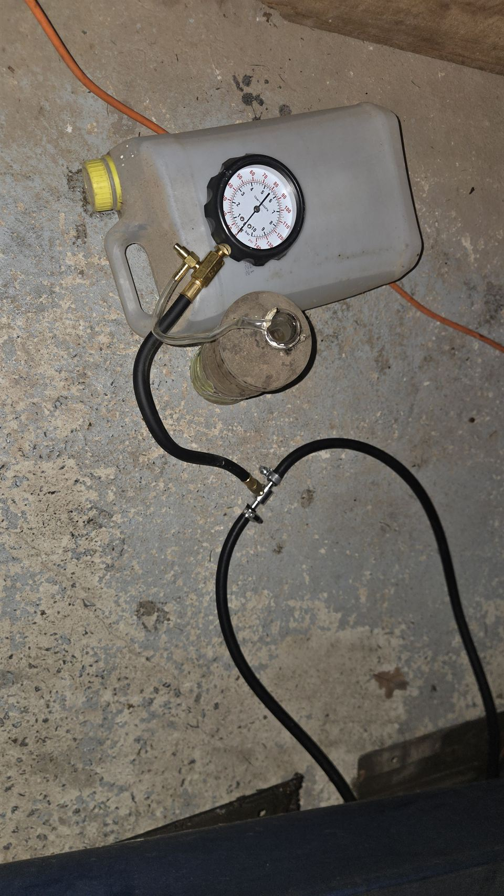
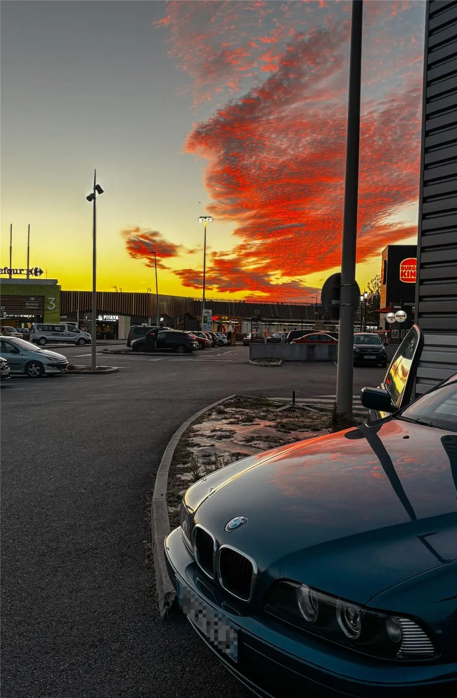

Projet automobile · en cours
BMW E39 520i
Une berline de 2002, achetée le 16 août 2026 à environ 164 000 km. Une base saine, de l'entretien à reprendre — et un mélange pauvre à comprendre. Chaque intervention a été mesurée, raisonnée, puis vérifiée.
- MoteurM54B22
- Architecture6 cylindres en ligne
- Cylindrée2,2 L
- Puissance170 ch
- GestionSiemens MS43
- BoîteManuelle


Fiche technique
La 520i, en chiffres.
BMW 520i E39 berline, 2002, boîte manuelle.
Moteur
- Moteur
- M54B22, 6 cylindres en ligne
- Cylindrée
- 2 171 cm³
- Puissance
- 170 ch à 6 250 tr/min
- Couple
- 210 Nm à 3 500 tr/min
- Puissance fiscale
- 11 CV
Transmission et freinage
- Transmission
- Propulsion
- Boîte
- Manuelle, 5 rapports
- Freins
- 4 disques, ventilés à l'avant
- Jantes et pneus
- 17 pouces sur la mienne, 235/45 R17
Gabarit
- Longueur × largeur × hauteur
- 4 775 × 1 800 × 1 435 mm
- Empattement
- 2 830 mm
- Poids
- 1 495 kg
- Coffre
- 460 L
- Réservoir
- 70 L
Performances et consommation
- Vitesse maximale
- 226 km/h
- 0 à 100 km/h
- 9,1 s
- Urbaine
- 12,2 L/100 km
- Extra-urbaine
- 7,1 L/100 km
- Mixte
- 9,0 L/100 km
Encyclopédie
Le tour du propriétaire.
Touchez un point pour découvrir l'équipement ; portes, capot et coffre s'ouvrent au clic. Puis installez-vous au volant.
Glissez pour tourner autour de la voiture · clic droit pour déplacer
Place du conducteur : glissez pour regarder autour de vous
Documentation
Le M54 expliqué.
La voiture en 14 grands groupes, de la mécanique à la carrosserie : 84 fiches en tout. Dépliez le détail d'un groupe pour ouvrir la fiche d'une pièce : sa place dans la voiture, la pièce seule en 3D et, quand elle existe, sa photo réelle.
La maquette reste une simplification : de nombreux petits éléments — durites, colliers, faisceaux électriques, capteurs, visserie — ne sont pas représentés.
Passer la visite guidée : aller à la maquetteRéel ou maquette
La photo, la maquette.
Un vrai compartiment moteur de E39 à moteur M54, et la maquette vue sous le même angle, capot ouvert. Faites glisser le curseur pour passer de l'un à l'autre.

Index des pièces
Toutes les pièces.
Une fiche par pièce : sa place dans la voiture et la pièce seule, en 3D. Dépliez une catégorie.
La maquette reste une simplification : de nombreux petits éléments — durites, colliers, faisceaux électriques, capteurs, visserie — ne sont pas représentés.
Le moteur
Le M54 en pièces.
Une maquette du six cylindres dans sa carrosserie : faites-la tourner, ouvrez la vue éclatée, cliquez une pièce pour ouvrir sa fiche. Portes, capot et coffre s'ouvrent au clic ; le cache moteur se retire.
La maquette reste une simplification : de nombreux petits éléments — durites, colliers, faisceaux électriques, capteurs, visserie — ne sont pas représentés.
Simulation · point mort
- Liquide de refroidissement
- Carburant (départ)
- Carburant (retour au réservoir)
- Huile moteur
- Ils circulent quand le moteur tourne (bouton Accélération).
Affichage
Chargement de la vue 3D…
La méthode
Mesure, hypothèse, vérification.
Une seule modification à la fois, puis relecture des valeurs avant de conclure. C'est la règle qui évite de remplacer trois pièces pour une panne qui n'en demandait qu'une.
-
01 · Mesure
Le calculateur ajoute de l'essence des deux côtés : +7,0 % / +4,7 % au ralenti le 08/10, puis +8,6 % / +6,3 %. Codes P0171 et P0174 : mélange trop pauvre.
-
02 · Hypothèse
Le banc 1 a environ 2 points d'avance : une prise d'air côté banc 1. Le débitmètre de 2001 sous-lit de 6 à 7 % à fort débit : un contributeur commun.
-
03 · Vérification
Test fumée le 14/10 : la fuite est au manchon d'admission. Débitmètre neuf, joint DISA remplacé. Relevé après intervention : 0 % / 0 %.
Les chantiers
Ce qui a été fait.
-
03/10/2026
Pompe à essence AEM 340 L/h
La pompe d'origine fatiguait : démarrages difficiles, plusieurs coups de clé, perte de puissance. Le diagnostic n'a pas été fait au doigt mouillé : la pression de rampe a été vérifiée au kit manomètre — trop basse.
Remplacement par une AEM 340 L/h (réf. 50-1220), choisie pour sa compatibilité E85. Un calage juste après le montage venait des raccords sertis faits maison, pas de la pompe. Depuis : ralenti normal, reprises meilleures.
Leçon : jamais de raccordement sur le faisceau d'origine sans adaptateur — une polarité inversée fait tourner la pompe à l'envers.
- AEM 340 L/h · 50-1220
- Pression attendue : ~3,5 bar (spécification)
-
08 — 09/10/2026
Diagnostic du mélange pauvre
Log complet du calculateur (MS430DS0, environ 110 points) et lectures à la valise V519. Les corrections carburant montent des deux côtés, le banc 1 devant.
- 42 %duty cycle injecteurs à 4 646 tr/min — sains, loin du seuil de 85 %
- 121 g/sdébit d'air mesuré, contre 129 à 140 g/s attendus : le débitmètre sous-lit
- +2 ptsd'écart banc 1 / banc 2 : le signe d'une prise d'air localisée
Les deux causes coexistent sans se contredire : une prise d'air côté banc 1 et un débitmètre vieilli. Le test fumée tranchera la première ; un débitmètre neuf, la seconde.

Photo réelle : le code P0171 lu au V519. -
09/10/2026 · 165 509 km
Premier plein mélangé
Avant toute reprogrammation, un premier essai de mélange : 30 L de SP98 et 15 L d'E85 dans le réservoir, noté au carnet de bord. Le calculateur reste d'origine : c'est le début de la conversion éthanol.
- 30 L SP98 + 15 L E85
- Calculateur d'origine, sans reprog
-
13/10/2026
Débitmètre neuf et joint DISA
Le débitmètre d'origine Siemens 5WK9 605 (BMW 13 62 1 432 356), daté de 2001, est remplacé par un Pierburg 7.07759.09.0. Le même soir, le joint de la DISA — légèrement aplati — est changé.
Relevé du jour : LTFT +3,1 % / 0,0 %. Le banc 2 est revenu à zéro, le banc 1 garde un reste : la prise d'air n'est pas encore trouvée.
- Débitmètre neuf · Pierburg 7.07759.09.0
- Ancien · Siemens 5WK9 605 (2001)
Le débitmètre mesure la masse d'air : 3,0 g/s au ralenti, 121 g/s en pleine charge en 3e (relevés du 08/10, ancien débitmètre). La DISA change la longueur du chemin de l'air. Son joint aplati était un candidat côté banc 1 : remplacé le 13/10. -
14/10/2026
Test fumée : la fuite est trouvée
Avec la machine à fumée d'un ami, moteur froid et arrêté, durite obturée côté filtre : la fumée suit le chemin de l'air et ressort là où l'air non mesuré entrait. Verdict : fuite au manchon d'admission.
Le manchon d'admission et le raccord en F sont remplacés. L'air qui entrait sans passer par le débitmètre ne fausse plus le dosage.
- Manchon débitmètre → papillon : fuite
- Joint DISA · durites CCV · bouchons du collecteur · tube de jauge
-
18/10/2026
Réfection complète du refroidissement
Le 2 octobre, le liquide s'échappait par le bouchon à chaud : un bouchon neuf de 1,4 bar qui ventile, c'est une surpression réelle. Le radiateur fuyait — patch époxy le 6 octobre, en attendant les pièces.
Le kit complet est monté : radiateur Nissens 60648A, pompe à eau Meyle 313 011 2001, thermostat Mahle TM 13 97, puis purge soigneuse du circuit.
- Radiateur · Nissens 60648A
- Pompe à eau · Meyle 313 011 2001
- Thermostat · Mahle TM 13 97
Froid : clapet fermé, petit circuit. Chaud : la cire se dilate, le clapet s'ouvre, le radiateur entre en jeu. Sur le roulage du 08/10, le liquide est resté entre 83 et 98 °C. -
06 au 11/11/2026 · avant 168 000 km
Lecture complète du calculateur
Le 06/11, le calculateur est identifié : Siemens MS43 (M54_430), version exacte pas encore lue. Les logs de pleine charge au SP98 montrent des injecteurs ouverts à 64,9 % du temps à 6 399 tr/min.
Le 08/11, lecture complète du calculateur (512 Ko) avec MS4x Flasher, gardée comme copie de référence : elle confirme le logiciel 430037. Les modules de la voiture sont identifiés (LCM III indice 18, ZKE3, KOMBI39C…) et les jobs
ms430ds0listés.Le 11/11, recherches (forum 6enligne, tutoriels, wiki ms4x) et un premier calcul : sans reprogrammation, le mélange possible plafonne vers E20-E25.
- Siemens MS43 · logiciel 430037
- Lecture 512 Ko · MS4x Flasher
- Injecteurs 64,9 % à 6 399 tr/min (SP98)
-
13/11/2026 · avant 168 000 km
Bobines échangées
Des ratés à froid apparaissaient sur les cylindres 4 et 5. Défauts lus puis effacés à 18h02 (l'airbag n'est jamais interrogé), puis bobines échangées 1↔4 et 2↔5, pour voir si les ratés suivent la bobine.
L'essai du 13/11 n'a rien tranché : l'irrégularité à froid est restée sur les cylindres 4 et 5, la bobine n'était donc pas en cause. Le 14/11, démarrage à froid à 10,5 °C : aucun raté. Le passage au banc est gardé pour plus tard. Les bobines reprennent leur place le 19/11, avec les bougies neuves.

Photo réelle : numéros écrits sur les bobines et le faisceau, le 1 côté avant. -
Vers le 14/11/2026 · environ 168 000 km
Filtre à essence, durites et vidange
Vers cette date (le jour exact n'a pas été noté) : filtre à essence Purflux à régulateur intégré, avec 3 durites neuves et leurs colliers, et vidange à la Motul 8100 X-cess 5W40.
Entretien prévu ensuite : un filtre à essence chaque année.

Photo réelle : le filtre Purflux et ses durites neuves, sous la voiture. -
19/11/2026 · un peu plus de 168 000 km
Bougies Denso IK20TT
Les six NGK BKR6EQUP déposées avaient été posées le 31/03/2021 à 153 311 km selon la facture : environ 15 000 km de service. À l'œil : becs clairs, couleur beige ; une seule a le filetage brun doré (probablement le cylindre 3, la première de la rangée étant le cylindre 1).
Les Denso IK20TT neuves sont posées le jour du flash, et les bobines Bosch 0 221 504 004 reprennent leur ordre d'origine.


Photos réelles : les anciennes NGK ; les bobines, les Denso neuves et la clé à bougie. -
19/11/2026 · 18:24 à 18:42
Pression d'essence au manomètre
Avant le flash, la pression est vérifiée avec un manomètre monté sur un T, a priori entre la sortie du filtre et le moteur, pendant qu'un log enregistre le régime.
- 3,1 barcontact mis, moteur arrêté
- 3,5 barstable au ralenti, et constante pendant les accélérations à vide jusqu'à 6 107 tr/min (0 raté, KR 0)
- 2,9 barà 18:42, dix minutes après l'arrêt (3,0 bar juste après, à 18:32)
Cohérent avec les 3,5 bar de BMW, moteur à vide : la pleine charge sur route n'est pas mesurée. Le graphique est dans la section éthanol.


Photos réelles : le montage sur un T ; le cadran contact mis, environ 3,1 bar (45 psi).
Le résultat
Retour à zéro.
Les corrections long terme (LTFT) disent combien d'essence le calculateur ajoute pour compenser. Après l'intervention, il n'a plus rien à corriger.
| Relevé | Banc 1 | Banc 2 |
|---|---|---|
| 08/10 · V519 | +7,0 % | +4,7 % |
| V519 (photos du 09/10, mesure non datée) | +8,6 % | +6,3 % |
| 13/10 | +3,1 % | 0,0 % |
| Après intervention · relevé ponctuel | 0 % | 0 % |
+3,1 %
LTFT banc 1
0,0 %
LTFT banc 2
Les relevés
Les relevés, en vrai.
Données AVANT réparation — roulage du 08/10/2026, log MS430DS0. Valeurs approximatives, relevées sur les graphiques du carnet de bord.
Corrections carburant
Positives = le calculateur ajoute de l'essence pour compenser un mélange pauvre.
VANOS : consigne contre réel
Admission et échappement, en degrés vilebrequin : la position réelle suit la consigne.
Sondes lambda
Tension des 4 sondes, en volts (VKAT = avant catalyseur, NKAT = après). Les sondes amont basculent entre pauvre et riche ; sur ce log, les sondes aval oscillent presque autant (écart-type ~0,32 V contre ~0,35 V). Les courbes sont présentées telles quelles, sans conclusion sur l'état des catalyseurs.
Températures
Liquide de refroidissement, huile (modélisée) et air admis, en °C.

La valise V519
Photo réelle : LONGFT1 +8,6 %, LONGFT2 +6,3 % au ralenti (752 tr/min). La dérive continuait, banc 1 devant.
La conversion éthanol
Rouler à l'E85.
Du premier plein mélangé du 09/10 au démarrage à froid du 20/11 : le calculateur Siemens MS43 reprogrammé pour accepter aussi bien le SP98 que l'E85, sans capteur d'éthanol. Tout est journalisé ; ce qui est marqué « estimé » est un calcul, pas une mesure.
Le principe : un flex sans capteur
L'éthanol demande environ 30 à 40 % de carburant en plus que l'essence. Sans capteur d'éthanol, le calculateur ne sait pas ce qu'il y a dans le réservoir : il le découvre par les sondes lambda, et son adaptation long terme par banc, la MUL (correction multiplicative), apprend l'écart.
Le fichier « flex v1 » multiplie donc la base d'injection par 1,297 et élargit la plage d'adaptation vers le bas. Au SP98, la MUL doit retirer environ 23 % ; à l'E85 d'été, elle ajoute environ 8 % ; la butée haute d'origine (+15 %) n'est pas touchée (plage calculée).
Avance, pleine charge, VANOS, ralenti, antidémarrage et programme sont inchangés. Le 15/11, les deux PC (le fixe pour l'analyse, le portable pour la voiture) arrivent à la même conclusion : un flex sans capteur est possible, avec une base ×1,30 et une butée basse élargie.
Une autre piste a été préparée le même jour : un mode de démarrage SP98 / E85 choisi aux boutons du volant. Testé en émulation, vérifié en lecture seule dans la voiture le 16/11, il n'a jamais été écrit dans le calculateur et reste en secours.
- ×1,297facteur d'injection des 6 cylindres (1,000 d'origine)
- -30 %butée basse de la MUL, au lieu de -12 %
- 81 octetsmodifiés, tous dans la calibration
Les valeurs modifiées : origine contre flex v1
| Repère | Élément (définition 430037) | Origine | Flex v1 | Pourquoi |
|---|---|---|---|---|
| A | t_ti_as_0..5 · facteur d'injection des 6 cylindres | 1,000 | 1,296875 (×1,297) | L'éthanol demande environ 30 à 40 % de carburant en plus. Le facteur est appliqué avant le temps mort des injecteurs (vérifié dans le code) |
| B | c_ti_ad_fac_min · butée basse de l'adaptation MUL | -12 % | -30 % | Au SP98, avec la base ×1,297, il faut environ -23 % |
| B | c_lam_min · butée basse de la régulation et de l'adaptation | -25 % | -31,25 % | Borne la somme régulation + MUL : indispensable au SP98 |
| C1 | c_lam_min_fsd · seuil du défaut « mélange trop riche » | -31,25 % | -40 % | Pas de faux défaut au SP98 |
| C2 | Axe ldp_ti_ad_fac_mmv (1er point) et table ip_ti_ad_fac_fac__tco__ti_ad_fac (1re colonne) | -12 % ; 0,40 / 0,45 / 0,50 / 0,60 | -30 % ; 0,996 | Prise en compte de l'adaptation à froid sur la nouvelle plage |
| C3 | ip_tipr_cst__tco (pré-injection au démarrage) et ip_ti_cst__n__tco (injection de lancement) | origine | pré-injection ×1,14 à ×1,58 ; lancement ×1,41 à ×1,16 (graphique ci-dessous) | Profil de démarrage intermédiaire SP98 / E85, testé le 20/11 à 15 °C (environ E40, estimé) : démarrage propre, 2 ratés au cylindre 4 |
| C4 | c_ti_ad_fac_fsd_ld | -11 % | non modifié | Garde une protection du canister |
- Les 81 octets changés sont tous dans la zone de calibration.
- Le temps d'injection lu par INPA est pris avant le ×1,297 (probable).
- Rapport cyclique des injecteurs à pleine charge, calculé par le PC fixe avec un temps mort supposé de 0 à 0,8 ms (ce n'est pas une mesure) : E40 75-79 %, E50 77-82 %, E70 85-89 %, E85 à 85 % d'éthanol 91-95 %.
Profil de démarrage (C3)
Facteur réel du flex v1 par rapport à l'origine (1 = inchangé), base ×1,297 comprise : le démarrage passe lui aussi par le facteur d'injection. Pré-injection : les 8 points de l'axe de température, de -30 à 90 °C ; lancement : sur les 3 lignes de régime.
Les trois tables modifiées, comme dans un logiciel de calibration : chaque case est colorée du bleu (valeur basse) au rouge (valeur haute). « Écart % » compare la valeur stockée ; pour les deux tables de démarrage, « Écart réel % » ajoute la base ×1,297, appliquée elle aussi au démarrage. Survolez une case pour le détail.
Injection de lancement (C3)
ip_ti_cst__n__tco · temps d'injection de base au lancement, en ms, selon le régime et la température d'eau.
Pré-injection au démarrage (C3)
ip_tipr_cst__tco · temps de pré-injection de base, en ms, selon la température d'eau.
Prise en compte de la MUL à froid (C2)
ip_ti_ad_fac_fac__tco__ti_ad_fac · facteur appliqué à l'adaptation apprise pendant la montée en température. Le premier point de l'axe MUL passe de -12 % à -30 %, et sa colonne à 0,996 (la valeur maximale du format, celle de 90 °C d'origine).
Les outils et la méthode
-
Lecture et diagnostic
Câble K+DCAN USB (FTDI), INPA / EDIABAS en portable, et des scripts PowerShell 32 bits maison qui appellent
api32.dll: l'enregistreurEnregistreur_E39.ps1(environ 5 mesures par seconde, mode rapide pour la pleine charge, défauts relus au début et à la fin, arrêt par un fichier STOP),verif_voiture.ps1(lecture seule, liste blanche de jobs), la lecture de la jauge et l'effacement des défauts (airbag exclu). En renfort : Deep OBD sur Android et la valise V519. -
Reprogrammation
MS4x Flasher 1.6.1 (lecture complète, écriture partielle, correction de la somme de contrôle, remise à zéro de l'adaptation), la définition XDF 430037 v1.15, Ghidra 12.2 pour lire le programme,
construire_flex.py(construit le fichier depuis l'original et la liste validée, refuse d'écraser, vérifie l'empreinte) etms43_verif.py(avant le flash, contrôle que seules les adresses de la liste changent). -
Atelier
Manomètre d'essence sur un T,
calc_puissance.py(puissance calculée à partir des logs et du GPS), et deux PC qui se contrôlent : le fixe pour l'analyse, le portable pour la voiture. -
Méthode
Tout est journalisé et la copie d'origine est gardée. Deux lectures du calculateur avant d'écrire, des empreintes SHA-256, et chaque valeur validée avant le flash.
Le flash du 19/11, heure par heure
Heures du PC portable. La veille au soir, le fichier flex v1 avait été construit sur le PC fixe et relu par 3 revues indépendantes ; il n'était pas encore validé.
-
Avant 18h
10 L de SP98
Ajoutés à environ 12 L restants (±2 L) : environ 22 L à E12-E20 (estimé), puis environ 20 minutes de route.
-
Dans la soirée
Bougies, bobines, pression
Bougies Denso IK20TT posées, bobines remises dans le bon ordre. Pression d'essence de 18:24 à 18:42 : 3,5 bar stable au ralenti et en accélération.
-
Avant le flash
Validation ligne par ligne
Yanis relit et valide chaque valeur du fichier : « ok je valide tout on testera après de toute facon ».
ms43_verif.pydonne alors le code 0 sur la vraie liste. Vers 20:59, Yanis annonce une batterie à 12,5 V « avant de rouler » (méthode de mesure non notée, ce n'est pas une mesure pendant l'écriture). Défauts relus. -
Vers 21:06
Lecture complète avant le flash
Identique à celle du 08/11 : même empreinte SHA-256. Le calculateur n'a pas bougé depuis la copie de référence.
-
Entre 21:06 et 21:14
Écriture de la calibration seule
Écriture partielle (environ 20 secondes d'après le wiki MS4x, durée non mesurée) avec MS4x Flasher 1.6.1, « Safety Checks » et « Checksum Correction » actifs. Message : « Successfully wrote the calibration section to the ECU ».
-
Vers 21:14
Lecture de contrôle et remise à zéro
Le contenu relu est identique au fichier flex, sauf la somme de contrôle (2 octets, corrigée par le logiciel). Puis remise à zéro de l'adaptation lambda seule (« Reset Adaptation », case « Lambda Adaptation »).
-
21:17
Premier démarrage
Au quart de tour, mais le ralenti est trop riche : la correction instantanée reste collée à la butée de -31,25 %, sondes à 0,85-0,92 V (premier régime enregistré à 21:17:54). Les défauts lambda 202/203 et 227/228 étaient déjà en mémoire avant le flash ; les nouveaux sont ceux du combiné (246, 247, 248) et de l'ASC (59), dus au silence du bus CAN pendant l'écriture, non effacés. Explication probable (analyse du PC fixe, 20/11) : la remise à zéro avait mis la MUL et l'ADD à 0, et la MUL n'apprend qu'au-dessus de 1 280 tr/min. Consigne retenue : après toute remise à zéro, rouler tout de suite en charge partielle.
-
21:23 et 21:41
Sur la route
Après une hausse vers +4 / +5 %, la MUL saute à -7,7 / -8,9 % vers 21:30 (cause non établie), puis descend par paliers : -7,6 / -8,8 % au ralenti vers 21:37, -13,3 / -16,6 % vers 21:50, puis -17,4 / -20,2 % à la fin du trajet de 21:41. Le ralenti chaud revient en régulation.
-
22:12
15,00 L d'E85
Ajoutés à 17-18 L restants (±2 L) : environ 32 L dans le réservoir, mélange estimé entre E34 et E50. « E40 » n'est qu'une hypothèse de calcul.
-
Retour, log dès 22:11:45
Trajet retour
La MUL remonte à -16,4 / -18,8 %, comme attendu avec plus d'éthanol. Ralenti à 727-754 tr/min en régulation, KR 0.
-
20/11, 08:40
Démarrage à froid
À 15 °C avec environ E40 (estimé, hypothèse de calcul) : propre, 1 100 tr/min puis 975 à 1 000 tr/min, 0 raté sauf 2 au cylindre 4 à 08:41:49, KR 0. Défauts moteur : seulement les 4 anciens, absents en ce moment.
Le carburant, plein par plein
| Date | Ajout | Avant (estimé) | Mélange estimé après |
|---|---|---|---|
| 09/10 | 30 L SP98 + 15 L E85 | - | essai sans reprog |
| 14/11 | 10 L E85 | 29-32 L SP98 | E18-E24 (environ E12-E13 d'après la MUL du 15/11) |
| 15/11 | 5,22 L E85 | environ 22 L | E22-E32 (d'après la MUL : environ E31-E33 le 18/11) |
| 19/11 | 10 L SP98 | environ 12 L (±2) | environ 22 L à E12-E20 |
| 19/11, 22:12 | 15,00 L E85 | 17-18 L (±2) | environ 32 L à E34-E50 (E40 : hypothèse de calcul) |
- La teneur réelle de l'E85 n'est pas affichée à la pompe (60 à 85 % autorisés) ; en hiver, elle est souvent estimée entre 65 et 75 %, d'où les fourchettes.
- La MUL est la vraie mesure : les calculs de plein ne servent qu'à prévoir.
Mélange estimé
Taux d'éthanol après chaque plein, en fourchette. Ce sont des estimations ; celle du 18/11 est déduite de la MUL.
Les essais, logs à l'appui
-
14/11 · environ 168 000 km
Puissance au SP98, puis 10 L d'E85
Puissance calculée par la méthode GPS et logs (
calc_puissance.py, passages en 3e) : environ 170 ch DIN et 215 Nm, à ±8 ch près, cohérent avec les 170 ch de BMW ; 0 à 100 km/h en environ 11,1 s au compteur, sur un essai. Le compteur affiche environ 2,2 % de trop ; la jauge est lue par l'OBD. Puis 10 L d'E85 sur 29 à 32 L de SP98 (environ E18-E24 calculé ; la MUL du 15/11 indique plutôt environ E12-E13, estimé) : la MUL passe de -1,90 / -4,48 % à +1,72 / -1,37 %. -
15/11
Au mélange : même puissance
Démarrage à froid au mélange : OK. Pleine charge : environ 174 ch, identique au SP98 (±3 ch), avance à fond identique, injecteurs à 59-65 %. Le soir, +5,22 L d'E85 sur environ 22 L (E22-E32, estimé) : la MUL monte jusqu'à +4,51 / +3,22 %. Analyse du programme 430037 avec Ghidra 12.2.
-
16/11
Vérifications en lecture seule
Pour le mode de démarrage au volant : boutons du régulateur lus, zone de mémoire libre repérée, le calculateur reste joignable environ 15 s après la coupure du contact. Défauts de référence : moteur 0, combiné 0, ASC 1 (capteur avant gauche, déjà connu).
-
18/11
Défauts lambda
4 défauts lambda (227, 228, 202, 203) apparus pendant les roulages depuis le 16/11. MUL à +8,84 / +6,85 %, soit environ E31-E33 (estimé). Batterie à 10,16 V au démarreur. Conseil retenu : du SP98 au prochain plein, et pas d'E85 avant la reprog. Le soir, le fichier flex v1 est construit et relu par 3 revues indépendantes ; il ne sera validé que le 19/11.
La MUL, trajet après trajet
Valeur en fin de chaque trajet enregistré, du 08/11 au 20/11. Positive = le calculateur ajoute du carburant. Elle monte avec l'éthanol jusqu'à +8,84 % le 18/11, repart de 0 au flash, puis s'installe en négatif avec la base ×1,297.
21:17, le premier ralenti après le flash
MUL remise à 0 et pas d'apprentissage au ralenti : la régulation descend seule jusqu'à la butée de -31,25 % et y reste près d'une minute, sondes au riche. C'est la limite que le flex v1 avait fixée à la somme régulation + MUL.
La MUL apprend sur la route
Trois trajets du 19/11 mis bout à bout (21:23, 21:41, 22:11). La MUL monte d'abord vers +4 / +5 %, puis saute d'un coup à -7,7 / -8,9 % vers 21:30 (cause non établie), descend par paliers et se stabilise vers -17 / -20 % ; après les 15 L d'E85, elle remonte un peu.
Démarrage à froid du 20/11
15 °C, environ E40 (estimé). Ralenti froid vers 1 000 tr/min, puis 9 minutes de trajet jusqu'à 64,5 °C : trop court pour que la MUL apprenne. La correction instantanée est positive (+4 % en roulant, +13 à +20 % au ralenti), ce qui est attendu avec plus d'éthanol.
Pression d'essence du 19/11
Relevés au manomètre sur un T (a priori sortie du filtre vers le moteur), et régime enregistré pendant les essais.
À venir
-
01 · Paliers d'éthanol
Un trajet chaud de 20 à 30 minutes pour que la MUL apprenne, puis environ +15 L d'E85 (E50), puis le plein complet (E70-E80).
-
02 · Pleine charge
Une seule montée en 3e jusqu'à environ 5 500 tr/min, seulement quand la MUL est stable entre -8 et -12 %. Contrôles : injecteurs sous 85 %, KR 0, 0 raté.
-
03 · Fichier éthanol avec puissance
Pour rouler à l'E85 pendant environ un an : avance augmentée à forte charge, objectif estimé de +5 à 8 % de puissance et de couple. Premier pas prudent de +1,5 à 2° possible, injecteurs de M54B30 si nécessaire, banc plus tard pour confirmer.
-
04 · Décisions
Pas de modification de l'amortissement des à-coups (confort), consigne du thermostat piloté inchangée, pédale peut-être plus tard (en milieu de course seulement), pas de mode de démarrage au volant pour l'instant.
-
05 · Entretien
Vidange vers novembre 2027 ou dans 7 500 km, filtre à essence chaque année, premier contrôle des bougies vers 5 000 km d'E85, niveau d'huile chaque mois l'hiver.
Galerie
Ma voiture.




Informatique & automobile.